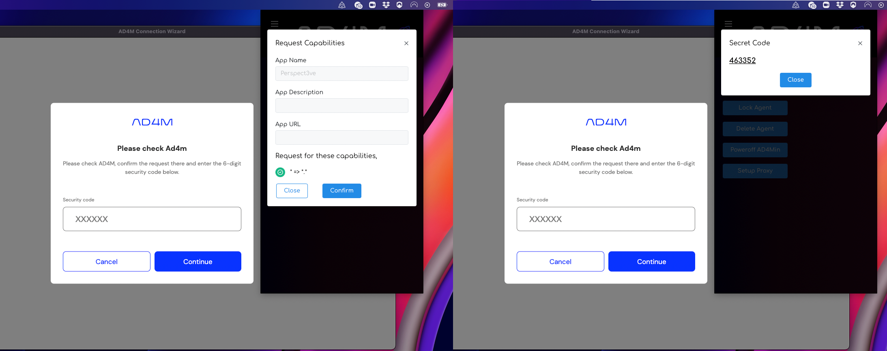

Getting Started
1. Install AD4Min
Download the latest version of AD4Min, the complete AD4M implementation with admin UI from its GitHub release page and run/install it.
After successful agent initialization you should see an AD4M system-tray icon which will
bring up an AD4M pop-up window on click:

2. Setup app to connect to AD4M
First, install npm dependencies to your app/UI project:
npm install -s @perspect3vism/ad4m @perspect3vism/ad4m-connect
Connect UI client using ad4m-connect
The AD4M-executor serves a GraphQL interface for UIs to connect to and remote control the executor to use Languages, query and modify Perspectives etc. That interface implements a capability-based security mechanism which allows for making the local interface available publicly via a proxy ("setup proxy" button) so that mobile UIs can call in to your ad4m-executor run at home, but also to manage access to certain Perspectives/Neighbourhoods only to certain UIs.
Anyway, to not confront you with the complexity of writing code for requesting a capability token and injecting it into a GraphQL client right at the start of your AD4M journey, there is ad4m-connect to do all of this for you and just deliver an initialized and usable Ad4mClient object.
Web/Browser UI
import it in the context of your root UI/component
import '@perspect3vism/ad4m-connect'
and then add the ad4m-connect web component to your markup:
<ad4m-connect
appName="Perspect3ve"
appDesc=""
appDomain="org.perspect3vism.perspect3ve"
capabilities='[{"with":{"domain":"*","pointers":["*"]},"can": ["*"]}]'
appiconpath="./images/Perspect3ve-Logo.png"
></ad4m-connect>
This web component will create a modal dialog over your UI,
but only if there is no capability token in the browsers localStorage yet.
After the first successful hand-shake, ad4m-connect will put the token there
and on next start-up of your app will check if the token still works and
not prompt the user again.
This is what your user will see when the app is not connected yet:

Since all the users's data is stored locally in AD4M Perspectives,
using a new app/UI and granting it access to all or parts of these perspectives
and AD4M functionality is potentially risky.
ad4m-connect not only makes it easy for app developers to connect to the users AD4M-executor,
it also provides a recognizable interface/wizard for the user.
Like in this example, an app/UI should provide its name and an icon for the user to quickly understand what is going on.
The capabilities property must hold a string that defines what capability
(access to which perspectives and interface functions) should be requested.
This example requests all which might a good first step when starting to familiarize
yourself with AD4M, but should be restricted to what you really need for a production release.
If the user clicks authorize, ad4m-connect will connect to the AD4M-executor and request a capability token.
This will make AD4Min bring up its pop-up window:

Here the user has to confirm the request to their AD4M instance.
Next, AD4Min will then show a six-digit random secret code that needs to be entered into the app UI.
That way we have safely established that the network agent initiating the capability request (as seen from
the AD4M-executor) really is the UI the users wants to use.
If all steps were completed successfully, the ad4m-connect modal dialog closes and your app is shown.
Now you just need to get the Ad4mClient out of ad4m-connect.
Then somewhere in the initialization part of your app, do something like:
import { Ad4mClient } from '@perspect3vism/ad4m'
import { getAd4mClient, onAuthStateChanged } from "@perspect3vism/ad4m-connect/web";
let ad4m: Ad4mClient = await new Promise((resolve, reject) => {
onAuthStateChanged(async (status) => {
if (status === "connected_with_capabilities") {
alert("Connected to Ad4m!");
resolve(getAd4mClient())
} else {
alert("Not connected to Ad4m!");
}
})
})
Now you are ready to go and use the ad4m object to talk to the users AD4M-executor.
Node/Electron UI
ad4m-connect also works within an Electron app, but needs to be used a bit differently.
Instead of adding a web component to your UI, ad4m-connect will open its own Electron window
with that same UI component in it.
All you got to do is importing one function from dist/electron
(best done in your) main Node/Electron start-up file)
const { ad4mConnect } = require('@perspect3vism/ad4m-connect/dist/electron')
const path = require('path')
let ad4m: Ad4mClient = await new Promise((resolve, reject) => {
ad4mConnect({
appName: "Perspect3ve",
appIconPath: path.join(__dirname, "graphics", "Logo.png"),
capabilities: [{"with":{"domain":"*","pointers":["*"]},"can":["*"]}],
dataPath: path.join(homedir(), '.perspect3ve')
})
.then(({client, capabilityToken, executorUrl}) => {
resolve(client)
})
.catch(() => reject())
}
})
There is one addition: dataPath.
The Node/Electron version of ad4m-connect stores the capability token (and executor URL)
to a file in the directory provided as dataPath.